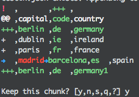

knead
Resolve data table conflicts in the terminal
$ npm install -g kneadscenario
You've got two hours left and you pull in some new data, and you see it. "OH NO..." you say. "I need to merge these two datasets... but EVIL OCTODATA got his hands on it! How will I ever get this done?"
Is it a bird..?
Is it a plane...?
Is it...
KNEAD?

"Don't panic, everyone. It's going to be ok."
Step 1.
Have two csv, tsv, or jsonlines files
$ ls
cities.csv
new_cities_data.json <-- this one was made incompatible by Evil OctodataStep 2.
Tell knead which one is the older (left) and which is newer (right). Specifi
$ knead cities.csv new_cities_data.json out.csv --format=csvStep 3.
Knead will step through the datasets one page at a time, showing you the data diff as it goes. You can choose to keep one side or the other.
Step 4.
The changes you select will be output to out.csv. Groovy!